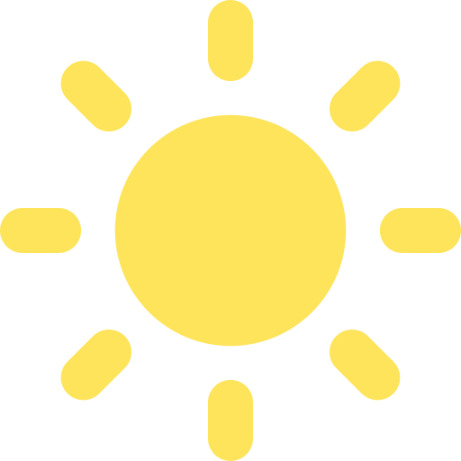

Tic Tac Toe

Pole w lewym górnym rogu
Pole środkowe na górze
Pole w prawym górnym rogu
Środkowe pole po lewej
Pole środkowe
Środkowe pole po prawej
Pole w lewym dolnym rogu
Pole środkowe na dole
Pole w prawym dolnym rogu
Restart